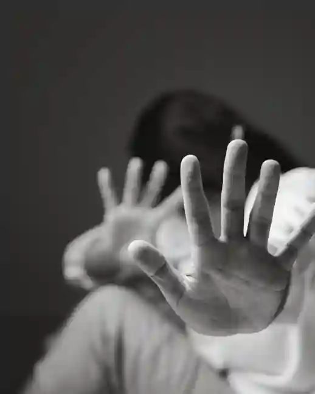

Informasi
Mengetahui Lebih Banyak, Bertindak Lebih Baik
Kekerasan seksual adalah masalah yang sering terabaikan. Dengan membaca dan memahami lebih banyak, Anda
bisa berperan dalam mencegahnya. Mari luangkan waktu untuk belajar, peduli, dan berbagi informasi
penting terkait kekerasan seksual...


Oleh Brandon Salim
Bentuk-bentuk kekerasan seksual yang sering terjadi
Oleh Brandon Salim
Kamu harus tahu trauma apa saja yang dapat terjadi.
Oleh Brandon Salim